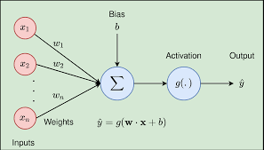
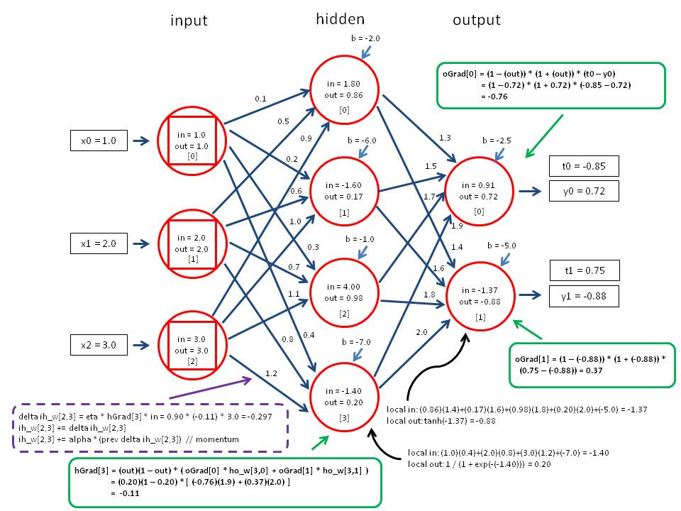

后向传播（back propagation）
这篇文章是复习《Data Mining: Concepts and Techniques》9.2节的内容。
后向传播算法是一种神经网络学习算法。
神经网络用一组连接的输入、输出单元，其中每个连接都与一个权重相关联。
神经网络可以用于分类（离散值），也可以用于预测（连续值）。
在学习阶段，调整权重，使其能够根据输入进行预测学习。因此神经网络的可解释性差，相当于一个黑盒。
神经网络和神经网络的算法有很多，这是其中一种。
9.2.1 按照多层前馈神经网络（后向传播算法在这种类型的网络上运行）
9.2.2 讨论定义网络拓扑
9.2.3 介绍后向传播
9.2.4 讨论训练后的神经网络提取规则
9.2.1 多层前馈神经网络（multilayer feed-forward）
组成：一个输入层，N个隐藏层（上图例子中为1层），一个输出层。每层都由单元（神经节点、神经元）组成（图里的圈圈）。每个单元将输入值加权求和，将输出值提供给下一层。
每个单元取前一层单元输出的加权和作为输入。对这个加权和，再用一个非线性的激活函数（比如ReLU）计算，作为输入。非线性激活函数用于支持非线性的输入建模。（要不然全是线性关系）。
9.2.2 定义网络拓扑
9.2.3 后向传播
过程：
- 初始化权重：网络的权重初始化为小随机数。每个单元还带一个bais（偏倚），这也是小随机数
- 向前传播输入：
- 输入层：训练集通过输入层，不发生变化
- 隐藏层和输出层：
- 计算净输入：加权求和Ij=∑iwijOi+θj 其中，Ij就是净输入，wij是上一层和单元i连接的权重值，Oi是上一层单元i的输出，θj是单元j上的bias。
- 激活（activation）：其实就是把上一步具有线性关系的净输入变得非线性。这个也叫挤压函数，其实就是把输入值域范围变小到0到1之间。比如用logsitic函数。

- 向后传播误差：更新权重和bias。
- 输出层：对于输出层单元j，误差Errj=Oj(1−Oj)(Tj−Oj)，其中Oj就是单元j实际的输出，Tj是之前训练集中的已知值（是一个目标值）。这里面Oj(1−Oj)是logistic函数的导数。
- 隐藏层：对于隐藏层单元j的误差，Errj=Oj(1−Oj)∑kErrkwjk，其中，wjk是单元j到之前一层（对于最后一个隐藏层，就是输出层，对于倒数第二个隐藏层，就是最后一个隐藏层）单元k的连接权重Errk是k的误差。
- 更新权重和bias：
- △wij=(l)ErrjOi,wij=wij+△wij其中，△wij是权重的改变值。l是学习率，通常在0到1之间。
- △θj=(l)Errj,θj=θj+△θj
- 终止条件：
- △wij小于阈值
- 如果用于分类，分类错误结果小于阈值
- 超过训练周期数
例子
